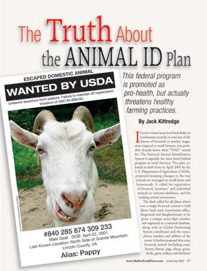
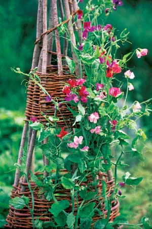
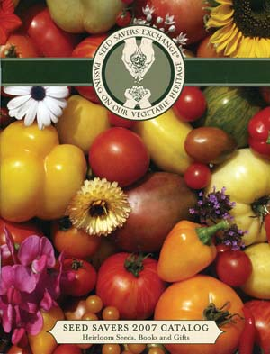
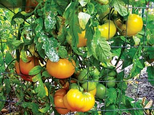
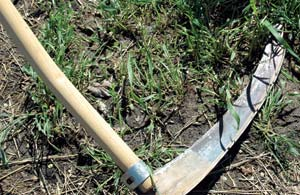

Dear Mother: August/September 2007
Letters from our readers on everything from NAIS to cigarettes.
Letters from our readers
August/September 2007
Old MacDonald had a farm, but he did not want Big Brother anywhere near it: this was the dominant reaction to our June/July report on the federally proposed National Animal Identification System (NAIS). Almost all letters we received on the subject said that cows, goats, horses, llamas and other livestock should be able to graze in peace, without radio chips or database entries. “I just hope it’s not too late!” wrote Marian Van Beever of Birch Tree, Mo. One rancher wrote to tell us about her NAIS protest ride. She rode her Texas longhorn steer some 650 miles, from Carbon, Iowa, to Cheyenne, Wyo.
Spreading the Word, Taking a Stand
Arizona: Thanks, but no Thanks
My husband and I have a race to the mailbox to see who gets to read Mother Earth News first. I have yet to find an article from which we don’t learn something. I wanted to make a comment on NAIS. Arizona is the first state to publicly come out and outlaw NAIS. It is a silly system, in the first place, and would do nothing but cause problems, especially with “equine owners.” I am glad to be living in Arizona where some people have the guts to say “no” to government, and their silly programs!
Jean Anderson
Rio Verde, Arizona
Education Begins at Home
I am a subscriber who greatly enjoys Mother Earth News, both when I agree and disagree with given articles. I also am a small farmer that tries to present information to my customers to help educate them on what is right and what is wrong in the world of agriculture. I was struck by the June/July 2007 article on NAIS as a fine summary of the situation and some of the underlying concerns with it. I plan to print copies and make them available at my farmers market table for customers. The article will help them understand one of the many issues confronting the small farmer today, and introduce them to a thought-provoking publication they might be well served to become more familiar with.
Dennis Buck
San Jose, California
Can Cigarettes Be Natural?
I noticed a cigarette ad this month. I find that totally against what Mother Earth is promoting and why I subscribe, read and recommend your magazine. If I see many more I will have to cancel my subscription. The last thing I want to see in your magazine is cigarette ads.
Kathy Wingate
Sarasota, Florida
We try to maintain as liberal a policy as we can regarding which advertisers may run in Mother Earth News. Every ad helps us bring the magazine to a bigger audience at a lower cost. In our judgment, the tobacco ad in question is not misleading. We hope you will not smoke. It’s a deadly habit. However, we are aware that many of our readers choose to smoke and we’re grateful that one tobacco advertiser is willing to support our work. - Mother Earth
The Original Green Living Group
We thought you might enjoy knowing the long-reaching effects of Mother’s advice.
Thirty years ago, my husband and I were readers. On a budget, time-rich and money-poor, we designed and built a pole home in Key Largo, Fla., with a cistern, graywater system, recycled materials, passive air conditioning and other Mother-inspired features.
Now, with water restrictions and drought an annual event, our “sustainable living” designs are being lauded in local papers and on radio talk shows as innovative. With electric bills reaching a new high, the passive innovations keep them as low as possible. With fuel costs soaring, our hybrid car makes us very happy.
My husband’s best birthday gift this year was the 30-year Archive CD set of Mother Earth News. He is e-mailing old articles on sustainability ideas to friends, and the ideas are “still cool” after all these years. We belong to a newly formed green living group, but know we belonged to the first “green living” group - readers of Mother!
The world is catching on to the truth. Mother knows best. Thank you for all you do - and do so well - past, present and future.
Karen and Ike Beal
Key Largo, Florida
Hurdles Obstacles
The June/July 2007 issue just arrived at my rural home yesterday. I have not even finished absorbing it, but I must let you know how grateful I am such a fine guide exists. First off, I am a Farm Beginnings student in central Illinois, and it is the most empowering education this 45-year-old has ever received. It is a license to learn, inspire, be inspired, innovate and declare a new day on the farm. Secondly, Terry Tempest Williams flies the beauty flag above all else in this often arid, ugly world. Her words caused my eyes to well up and my throat to constrict, but still I cried in joy as I read “Find something that matters deeply to you and pursue it. Question. Stand. Speak. Act. Make us uncomfortable. Make us think.” I hope every parent, partner, elephant trainer and politician places this advice squarely on their fridge or wherever the masses gather; these are words to live by, to wake up to. From my heart, I will share this little bit of info from a crazy middle-aged regenerative farmer who thinks an obstacle is meant to be hurdled.
Terry Starks
Williamsville, Illinois
Where are the Bees?
For two months I have been looking forward to the article “Honey and the Bees that Make It,” listed in the April/May 2007 issue under “Coming Up Next.” The June/July issue arrived yesterday - no article on bees. What happened?
Susan Laun
Lake City, Pennsylvania
Susan - thanks for your interest in this article. Like many of our readers, we’ve been closely following news reports about dying honeybees, the phenomenon now called colony collapse disorder. We decided to put off the article on beekeeping until we better understand how it will affect home beekeepers. - Mother Earth
Fun with Sticks
I loved the article, “Make Simple, Beautiful Garden Fences and Trellises” (April/May 2007). I’ve often contemplated using the various sticks I have to make something, but I just couldn’t decide what to make or how to get started. This article was the inspiration that I needed! Thanks for such a fun, educational magazine!
Lisa Grantham
Rockwell, North Carolina
Liberal Bias or Wise Words?
All the News That’s Fit to Print
I am responding to the reader letter in the June/July 2007 issue titled, “Throw Mother Out the Window?” The subscriber complaining about the so-called “liberal” agenda in the magazine obviously does not pay attention to the news or apparently any facts. First of all, the Iraq war is everyone’s business. We are paying for it through our taxes and losing numerous soldiers on a regular basis; not to mention the decline of the U.S. reputation and credibility.
Secondly, why do all the scientists have to be in agreement about the state of the environment before people act? We have known about the environmental consequences of industrial pollution, toxic waste and the problems associated with them (health risks and endangering wildlife and habitat) for a very long time. Mother Earth News provides ideas, solutions and experiences of people who are trying not to live with these effects, or to curtail them. Global warming is real and if you think we humans had nothing to do with it, a truth and reality check is needed! The fact of the matter is that we are dependent on oil, Iraq has oil and burning oil has threatened our environment. They are connected whether people want to admit it or not.
Mother Earth News shares hope and a wealth of information. If that happens to be “liberal” to anyone, then I say “good.” That’s what I was hoping for when I subscribed. By the way, my garden is looking great so far and I cannot wait to reap the benefits of eating locally grown food. Also, everyone loves my homemade fence made from tree limbs and branches! My family in South Dakota thanks Mother Earth News for all the tips.
Heather A. Campbell
Vermillion, South Dakota
Remember the Motto
In response to what Allen D. Adam (“Dear Mother,” June/July 2007) had to say, I am very excited that printed “Renewables to the Rescue” (“News from Mother,” April/May 2007). It is one of the many reasons I read this magazine. Let us remember, their motto is “The Original Guide to Living Wisely.” How can our country/planet live wisely when we are wasting tons of much needed money on a senseless war? I look to Mother Earth News to point out what we can change in order to live wisely. Don’t we all want a happy, healthy planet?
Katie Meyer
Carpentersville, Illinois
Break the Addiction, Choose Public Transportation
I’m not sure the ongoing debate on alternative fuels is really addressing the issue. Use of carbon-based fuels and the attendant pollution, reduced or not, misses the point: We as a society are addicted to the automobile.
I feel that there needs to be more time and effort devoted to reducing our dependence on it and the consequences of that addiction. How come we don’t address the potential for alternative transportation? I would like to see efforts devoted to things like nonpolluting public transportation: solar-electric buses, trains, light rail, etc., as well as promotion of bicycle use. I wonder what kind of upheaval this might cause in contemporary American society?!
Bob Abel
Dover, Delaware
Is This Heaven? No, It’s Seed Savers
I have been a loooong time reader of your magazine. My father was one of your first subscribers. I was fortunate to get most of his magazines when he passed away. I consider them a treasure with a wealth of information in them.
I can remember reading about Seed Savers Exchange of Decorah, Iowa, and you mention them once in awhile in articles. Have you ever seen their establishment? We took a day trip, high gas prices and all, to check them out. Finally, after all these years, I stood there looking at “Them that are doing!” I was amazed at their prices. I came home with a lot more plants than I figured I would with the money I had.
I think you need to see their operation. They have 890 acres with many gardens, a visitor’s center, ancient white park cattle, trails to hike and even a geocache to find. You do know about geocaching, don’t you?
Connie Carpenter
Reads Landing, Minnesota
The Tomato that Could
When the first freeze hit north Florida last year, I ventured out into my little paradise, dreading to see my cherished tomato plants and other vegetables. But wait, I was startled to see one little tomato still defiantly upright, with all its leaves intact. I had planted it as a cutting, from an heirloom that I was partial to - ‘Azoychka,’ a small yellow beefsteak variety from Russia that I bought from Tomato Growers Supply Co. “Well, I said, if you are so determined to live, I will help you out.” Yes, I talk to plants.
So I found a large pot and carefully transplanted my little “saving grace.” I placed the pot by the dirt road in the sunniest spot and built a small wire fence around it to keep the armadillos at bay. Every morning I checked the weather forecast and brought “Grace” into the house when cold threatened. She thrived and harbored no bugs or worms, although no blooms came.
Time passed and I started my 100-plus vegetable seeds under grow lights. I always think that some will not germinate, but they all do! I don’t have the heart to terminate extras, so in late March all were planted in the garden. Grace was still potted by the road because of my fear that she was too big to move without killing her.
Then my son with his huge surveying truck surprised me with a visit. I proudly showed off Grace. Later on, he was unusually quiet so I asked what was wrong. He said, “Mom I didn’t see your tomato plant when I looked for a place to park. I am sorry, but I ran over it.” I rushed outside and there she was, splattered on the ground, pot and all! Oh, it was heart-stopping, but I gathered it all up, found another pot, consoled my son and hoped for the best!
Grace was not to be deterred and began to grow again. I found a large area in the back of the garden, added compost and organic fertilizer and took the plunge to transplant her. In one month she grew to the top of the fence, so I added a 6-foot pole and tied her up around it. Now she is full of blooms and tomatoes large and small. She is truly the tomato plant that could.
June Pauline Zent
Tallahassee, Florida
Another Scythe Source
In the April/May 2007 Dear Mother, one of your readers asked for resources on where to buy a scythe. You mentioned several, but left out a very important scythe maker, the Marugg Co. Just thought I should throw Marugg into the mix.
Amy Wilson
The Marugg Co.
Tracy City, Tennessee
(931) 592-5042
The Ins and Outs of Washing Vegetables
In a response to a letter in the April/May 2007 issue, you advise to wash crops thoroughly before eating to remove E. coli. Regarding the California spinach E. coli outbreak, the E. coli was actually taken up by the plant and consequently is not removable by washing. That’s why this issue is so alarming! As long as we force feed-lot cattle to consume an unnatural diet of corn, this problem will remain a threat.
David Luxem
Seattle, Washington
Washing produce is always wise, but David is right - studies have confirmed that the toxic E. coli bacteria can be absorbed by some food plants. - Mother Earth
Material for Thought
I have just learned from a Wal-Mart store clerk that all the Wal-Mart stores will be closing their fabric departments soon and limiting fabric to pre-cut pieces. This affects many sewers in rural America who have no other source for fabric. It seems to me to be somewhat newsworthy since many of us sew and thousands live in areas where the only place nearby to purchase material is the local Wal-Mart. What will happen to all those quilts, costumes, curtains and clothes? Perhaps you might also let us know where small-town seamstresses can find another merchant for their sewing needs.
Love my Mother Earth! When I finish reading mine, as much as I like to save them, I give them to the elderly couple on the corner.
Cindy Meyer
Troy, Michigan
We talked to a Wal-Mart spokesperson and learned that most stores will keep their fabric departments and continue to sell fabric by the yard. Stores that have opened or been remodeled in 2007 account for most of those no longer carrying any fabric, sold by the yard or in pre-cut pieces, though some older stores will be making the change as well. Wal-Mart says it takes into consideration how relevant its fabric department is to a community when deciding if a store should continue to carry fabric. The transition should be complete by the end of the year. - Mother Earth
Concerned about Switches for Solar Lights Setup
In the April/May 2007 solar home lighting article, a glaring and very dangerous suggestion was made and used by example. The use of household switches to control low-voltage DC circuits will and has caused fires, do not use ever! Try this: turn your demo panel on for an hour and feel the back of the switches.
Jimmie Ellison
North Pole, Alaska
According to Gaiam Real Goods, who designed this system in kit form, in the demonstration setup heat was not a problem due to the low voltage (12V) and low current (1¼ amp) involved. There are switches rated for DC power that Real Goods would recommend to anyone who purchases a kit from them. - Mother Earth
Vinegar – Good for More than Pickles
I read with interest the letter from the reader (April/May 2007) who complained about the weeds between the bricks on his patio. A propane torch, wow. Try this: Mix up a solution of 10 percent vinegar and water and dowse the roots of the weeds with it. Use a stronger solution if necessary. I use 100 percent vinegar on bamboo. The vinegar will kill anything around it, but decomposes rapidly.
Lynne Russillo
Alexandria, Virginia
|
 ISTOCKPHOTO/ALEKSANDR LOVANOV Mother reports on NAIS and readers weigh in. |
MATTHEW T. STALLBAUMER The first Mother Earth News archive CD, 1970-80 |
 CHERYL HIMMELSTEIN Author Terry Tempest Williams writes on the power of storytelling. |
|
 DAVID CAVAGNARO You can build wonderful garden structures with pruned twigs and sticks. |
 SEED SAVERS EXCHANGE Seed Savers in Decorah, Iowa, is a wonderful source for seeds and plants. |
 JUNE PAULINE ZENT These ‘Azoychka’ tomatoes in Florida, survived, weather and a large truck and still produced copious amounts of fruit. |
|
 MEGAN PHELPS The Marugg Co. is additional scythe source. |
MATTHEW T. STALLBAUMER Bulb and switches setup for solar lighting kit. |
|